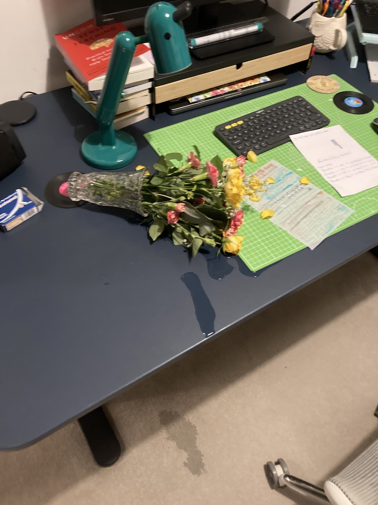

Jan. 8, 2024
The cats broke their new resolution not to knock stuff over in my office. Oh, who am I kidding? They never had such a resolution! If you can see a sheet of saturated paper, that was my to do list! Oh well.

The cats were either bounding across my desk to get to the window and look at the snow. Or they were just chasing each other around as usual.